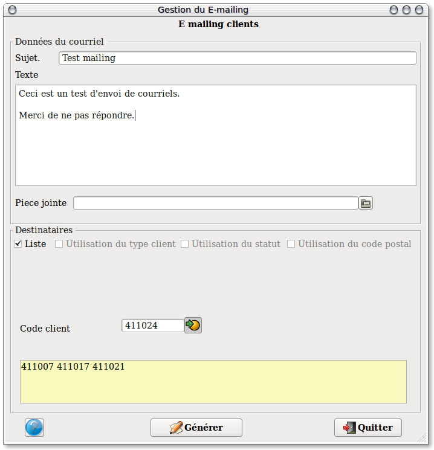

~ Comptabilité et Facturation Laurux ~

~ Comptabilité et Facturation Laurux ~ |
|
|
|
Pré-requis : Vous devez
au préalable completer les coordonées de votre serveur smtp dans les
préférences. (Ex : smtp.orange.fr)
L'écran de préparation se divise en deux parties. La partie supérieure est dédiée à la saisie du sujet et du texte du courriel.
La partie basse vous permet de gérer la liste de vos clients soit en saisissant manuellement une liste soit en générant automatiquement une liste de clients, une liste de types clients ou une liste de codes postaux.
Exemple d'une liste automatique.
Une fois définie la liste des
clients à traiter, on va pouvoir choisir l'ordre de tri en cochant le
bouton
souhaité, soit dans l'ordre des codes clients, soit dans l'ordre des
types clients
ou dans celui des codes postaux.
Si on ne souhaite pas travailler avec les types clients ou les codes
postaux, il suffit de décocher les boutons ad hoc.
Exemple d'une liste manuelle.

Dans le cas d'une saisie de liste, on peut, soit saisir manuellement les codes clients à traiter soit utiliser le bouton de recherche puis de faire sa sélection dans la fenêtre qui s'ouvre. Les clients s'ajoutent les uns à la suite des autres dans la fenêtre des clients saisis.
Lorsque tout est correctement renseigné on peut lancer l'envoi des mails en cliquant sur le bouton "Générer"
N’oubliez pas de parametrer les coordonnées du serveur SMTP dans les préférences ( Ex: smtp.orange.fr ).
----------------------------------------------------------------------------------------------------------------------